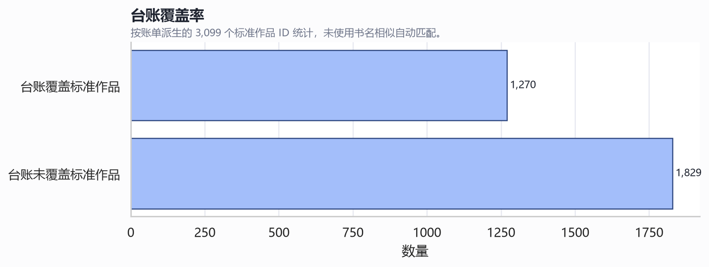
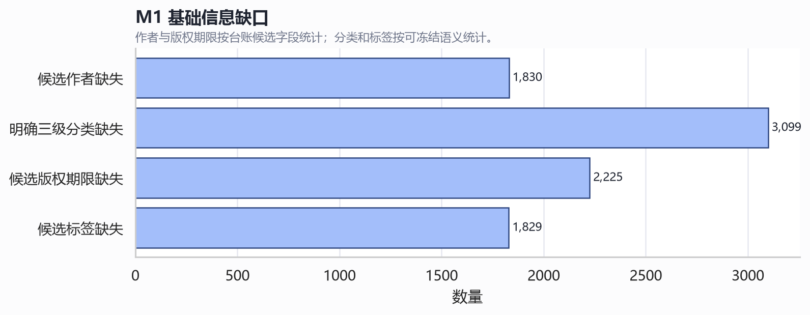
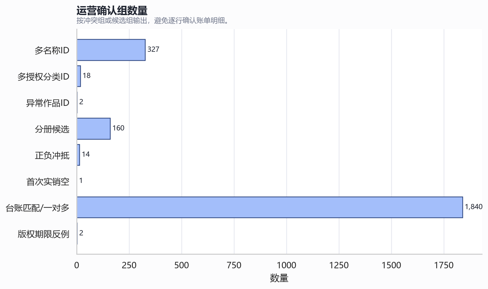

M1 数字版权台账分析报告
技术摘要
台账覆盖 1270 / 3099 个账单标准作品；不能单独覆盖 M1 基础信息需求。金额精度、首次实销金额符号规则和版权开始日期字段语义已解除 PENDING-DATA；分类、标签和冲突组确认仍需运营处理。
关键发现与图表



范围、数据和定义
关联只使用作品 ID 数字主体；账单最大月份与最新已确认完整月份分离；首次实销月份按首次正数实销记录确定。
方法
读取前后校验 SHA-256、大小和修改时间；账单金额使用 Excel 底层 token 转 Decimal；台账敏感取值仅进入被 Git 忽略的私有确认包。
文件、工作表、表头和记录规模
# 文件、工作表、表头和记录规模
## 已确认的数据事实
- 台账输入文件数：1；工作表数：1；台账记录数：12033；字段数：65。
- 账单输入文件数：1；账单行数：192899；账单月份范围：2017-06~2026-05。
- 原始文件运行前后按 SHA-256、大小和修改时间校验，未发生变化。
## 候选规则（未启用）
- 台账文件结构目前只有一种样式；后续若新增文件模板，需重新执行同样检查。
## 无法单靠台账或账单确认的事项
- 单文件分析不能证明所有未来台账模板稳定。
## 需要运营确认的样本
- 无作品级明细进入公开报告；文件级指纹保存在 source-notes。
## REQ 与 AT
- REQ-WORK-008、REQ-WORK-009、REQ-WORK-010、REQ-WORK-011；AT-M1-027、AT-M1-028、AT-M1-029、AT-M1-031
## PENDING-DATA 状态
- 文件模板多样性仍需随新增台账继续验证。
数字版权台账字段和值域
# 数字版权台账字段和值域
## 已确认的数据事实
- 台账字段数：65；完整字段清单已纳入本报告，敏感字段仅展示非空、缺失和 distinct 计数。
- 作者、书名、合同、作品ID、版权日期等字段不在公开报告展示具体值。
## 候选规则（未启用）
- 字段值域可作为补全表校验候选输入，但不能直接形成分类树或标签库。运营已确认 `签订日期` 作为版权开始日期，`到期时间` 作为版权到期日期。
## 无法单靠台账或账单确认的事项
- 字段名中未发现明确的一级、二级、三级主分类字段；运营已确认 `签订日期` 对应版权开始日期。
## 需要运营确认的样本
- 敏感取值样本保存在被 Git 忽略的私有目录，用于运营确认。
## REQ 与 AT
- REQ-WORK-008、REQ-WORK-009、REQ-WORK-010、REQ-WORK-011；AT-M1-027、AT-M1-028、AT-M1-029、AT-M1-031；REQ-CLASS-001、REQ-CLASS-002；AT-M1-040、AT-M1-041
## PENDING-DATA 状态
- 分类树和标签库仍需运营确认；版权开始日期字段语义已确认。
台账作品ID与账单ID匹配
# 台账作品ID与账单ID匹配
## 已确认的数据事实
- 台账可解析作品ID记录数：8881；不可解析/缺失记录数：3152。
- 台账覆盖账单标准作品：1270 / 3099，覆盖率 40.98%。
- 未使用书名相似自动关联；匹配只基于作品ID数字主体。
## 候选规则（未启用）
- 台账 `作品ID` 可作为 M1 主数据补全的优先关联键候选。
## 无法单靠台账或账单确认的事项
- 未匹配的标准作品不能从台账自动补全；需运营确认或补充来源。
## 需要运营确认的样本
- 台账匹配失败或一对多冲突确认表已生成。
## REQ 与 AT
- REQ-WORK-001、REQ-WORK-002、REQ-WORK-006、REQ-DQ-001；AT-M1-020、AT-M1-021、AT-M1-025、AT-M1-010；REQ-WORK-008、REQ-WORK-009、REQ-WORK-010、REQ-WORK-011；AT-M1-027、AT-M1-028、AT-M1-029、AT-M1-031
## PENDING-DATA 状态
- 未匹配和一对多冲突在运营确认前继续阻断正式补全应用。
重复ID、一对多和多对一关系
# 重复ID、一对多和多对一关系
## 已确认的数据事实
- 台账同一原始作品ID重复组：11；其中关键字段冲突组：11。
- 台账同一标准作品多原始ID组：0。
- 账单同一原始ID多名称冲突组：327；多授权分类冲突组：18。
## 候选规则（未启用）
- 确认单位应为冲突组，不应逐行处理账单明细。
## 无法单靠台账或账单确认的事项
- 不能自动选择出现次数最多或收入最高的名称作为正式结论。
## 需要运营确认的样本
- 已生成多名称、多授权分类、异常ID和台账匹配冲突确认表。
## REQ 与 AT
- REQ-WORK-001、REQ-WORK-002、REQ-WORK-006、REQ-DQ-001；AT-M1-020、AT-M1-021、AT-M1-025、AT-M1-010
## PENDING-DATA 状态
- 冲突组确认前继续阻断正式导入或正式基础信息应用。
台账对标准作品基础信息的覆盖
# 台账对标准作品基础信息的覆盖
## 已确认的数据事实
- 候选作者缺失标准作品数：1830。
- 明确一级至三级主分类缺失标准作品数：3099。
- 候选版权期限缺失标准作品数：2225。
- 候选标签缺失标准作品数：1829。
## 候选规则（未启用）
- 台账可部分覆盖作品名称、候选作者和候选版权期限。
## 无法单靠台账或账单确认的事项
- 台账不能单独覆盖 M1 全部基础信息需求，主要缺口为明确三级分类、标签库语义、期限缺失/冲突和未匹配作品。
## 需要运营确认的样本
- 缺口作品清单保存在私有目录。
## REQ 与 AT
- REQ-WORK-008、REQ-WORK-009、REQ-WORK-010、REQ-WORK-011；AT-M1-027、AT-M1-028、AT-M1-029、AT-M1-031；REQ-CLASS-001、REQ-CLASS-002；AT-M1-040、AT-M1-041
## PENDING-DATA 状态
- 分类树、标签库、期限缺失/冲突和未匹配作品仍需运营确认或额外来源。
标准作品名称差异
# 标准作品名称差异
## 已确认的数据事实
- 台账书名与账单历史作品名无规范化一致项的标准作品组：35。
- 名称差异仅作为风险信号，不作为自动解除或自动归并依据。
## 候选规则（未启用）
- 名称差异确认可作为基础信息补全前的阻断问题类型。
## 无法单靠台账或账单确认的事项
- 无法仅凭名称相似判断同一作品或正式标准作品名称。
## 需要运营确认的样本
- 名称差异样本保存在私有目录。
## REQ 与 AT
- REQ-WORK-001、REQ-WORK-002、REQ-WORK-006、REQ-DQ-001；AT-M1-020、AT-M1-021、AT-M1-025、AT-M1-010；REQ-WORK-008、REQ-WORK-009、REQ-WORK-010、REQ-WORK-011；AT-M1-027、AT-M1-028、AT-M1-029、AT-M1-031
## PENDING-DATA 状态
- 标准作品名称选择来源需运营确认。
作者与作者别名候选
# 作者与作者别名候选
## 已确认的数据事实
- 作者署名/作者原名候选别名记录数：5453。
- 同一规范化作者署名对应多个作者原名的歧义组：50。
## 候选规则（未启用）
- 作者署名与作者原名不同可作为作者别名候选。
## 无法单靠台账或账单确认的事项
- 同名作者、歧义别名不能自动归并。
## 需要运营确认的样本
- 作者别名候选和歧义组保存在私有目录。
## REQ 与 AT
- REQ-WORK-008、REQ-WORK-009、REQ-WORK-010、REQ-WORK-011；AT-M1-027、AT-M1-028、AT-M1-029、AT-M1-031
## PENDING-DATA 状态
- 作者对象和别名映射仍需运营确认后版本化。
分类和标签字段分布
# 分类和标签字段分布
## 已确认的数据事实
- 未发现明确的一级、二级、三级主分类字段。
- 候选分类字段：产品线, 级别, 归属, 授权性质, 版权类型。
- 候选标签字段数：22。
## 候选规则（未启用）
- 候选字段可辅助设计补全表和初始标签库候选，但不能直接冻结为 PRD 主分类或标签。
## 无法单靠台账或账单确认的事项
- 最终分类树、标签值、字段到标签库的映射无法单靠台账确认。
## 需要运营确认的样本
- 字段聚合分布在公开报告中以低敏聚合展示；作品级标签样本仅私有保存。
## REQ 与 AT
- REQ-CLASS-001、REQ-CLASS-002；AT-M1-040、AT-M1-041
## PENDING-DATA 状态
- 最终分类树、初始标签库和自动分类/标签规则仍为 PENDING-DATA。
版权日期格式、缺失和异常
# 版权日期格式、缺失和异常
## 已确认的数据事实
- `签订日期`有效候选记录数：11905；`到期时间`有效候选记录数：9931。
- 候选版权期限完整标准作品数：874 / 3099。
- 公开报告不展示作品级版权日期。
## 候选规则（未启用）
- 运营已确认 `签订日期` 作为版权开始日期，`到期时间` 作为版权到期日期。
## 无法单靠台账或账单确认的事项
- 台账无法单独确认缺失期限的补全来源，也无法自动解决同一标准作品的多组期限冲突。
## 需要运营确认的样本
- 版权期限反例确认表已生成。
## REQ 与 AT
- REQ-WORK-008、REQ-WORK-009、REQ-WORK-010、REQ-WORK-011；AT-M1-027、AT-M1-028、AT-M1-029、AT-M1-031
## PENDING-DATA 状态
- 版权开始日期字段语义已解除 PENDING-DATA；候选期限缺失作品和期限冲突组仍需补充或确认。
共享版权期限反例检查
# 共享版权期限反例检查
## 已确认的数据事实
- 同一标准作品存在多个候选版权期限组：2。
- 纯数字与Y前缀候选期限不同反例组：0。
## 候选规则（未启用）
- 出现多候选期限时，按共享版权期限规则阻断并提交业务确认。
## 无法单靠台账或账单确认的事项
- 不自动扩展为业务形态级版权期限字段。
## 需要运营确认的样本
- 版权期限反例确认表已生成。
## REQ 与 AT
- REQ-WORK-008、REQ-WORK-009、REQ-WORK-010、REQ-WORK-011；AT-M1-027、AT-M1-028、AT-M1-029、AT-M1-031
## PENDING-DATA 状态
- 反例组确认前，共享版权期限规则不能解除相关阻断。
台账自身重复、冲突和缺失问题
# 台账自身重复、冲突和缺失问题
## 已确认的数据事实
- 台账记录数：12033；缺失作品ID或无法解析作品ID记录：3152。
- 台账重复原始ID组：11；关键字段冲突组：11。
- 台账同标准多原始ID组：0。
## 候选规则（未启用）
- 台账问题可转化为基础信息补全前的整批校验问题。
## 无法单靠台账或账单确认的事项
- 错误过多时整份退回阈值仍需结合运营处理时长确认。
## 需要运营确认的样本
- 私有目录包含台账冲突样本。
## REQ 与 AT
- REQ-WORK-008、REQ-WORK-009、REQ-WORK-010、REQ-WORK-011；AT-M1-027、AT-M1-028、AT-M1-029、AT-M1-031
## PENDING-DATA 状态
- 退回阈值和自动处理边界仍为 PENDING-DATA。
无法通过台账补全的作品
# 无法通过台账补全的作品
## 已确认的数据事实
- 台账未覆盖账单标准作品数：1829。
- 候选作者缺失标准作品数：1830。
- 候选版权期限缺失标准作品数：2225。
## 候选规则（未启用）
- 未覆盖作品必须进入补全表或额外来源流程。
## 无法单靠台账或账单确认的事项
- 无法使用作品名称相似度自动补全。
## 需要运营确认的样本
- 缺口清单保存在私有目录和运营确认包。
## REQ 与 AT
- REQ-WORK-008、REQ-WORK-009、REQ-WORK-010、REQ-WORK-011；AT-M1-027、AT-M1-028、AT-M1-029、AT-M1-031
## PENDING-DATA 状态
- 未覆盖作品和缺失字段在运营确认前阻断进入后续正式评估。
可直接冻结的主数据字段语义
# 可直接冻结的主数据字段语义
## 已确认的数据事实
- 台账关联账单的首选键为作品ID数字主体；书名只作为冲突检查信号。
- 账单最大月份与最新已确认完整月份必须分离；2026-05是不完整月份，最新已确认完整月份为2026-04。
- 首次实销月份只取首次出现正数实销记录的月份；零值和负值不参与首次实销判断。
- 实销金额使用 Excel 底层完整精度和精确十进制语义。
## 候选规则（未启用）
- 金额物理类型候选为 NUMERIC/DECIMAL(32,18)，物理模型阶段最终确认。
## 无法单靠台账或账单确认的事项
- 分类树和标签库仍不能仅凭账单或台账自动冻结；版权开始日期字段语义已确认。
## 需要运营确认的样本
- 冻结规则已回写 PRD 和技术设计。
## REQ 与 AT
- REQ-DATA-IMPORT-006、REQ-WORK-003、REQ-WORK-004；AT-M1-006、AT-M1-022、AT-M1-023
## PENDING-DATA 状态
- 金额物理类型候选待物理模型阶段最终确认；分类和标签仍为 PENDING-DATA。
运营确认包
# 运营确认包
## 已确认的数据事实
- 运营确认表数量：8；确认总组数：2364。
- 确认包按冲突组/候选组生成，不生成 53,900 条账单逐行确认文件。
- 确认表位于被 Git 忽略的本地目录。
## 候选规则（未启用）
- 运营确认结果应形成版本化映射，并应用于组内全部相关收入投影。
## 无法单靠台账或账单确认的事项
- 未确认冲突组继续阻断正式导入或基础信息正式应用。
## 需要运营确认的样本
- 确认包 Excel 工作簿和 CSV 已生成到私有目录。
## REQ 与 AT
- REQ-WORK-001、REQ-WORK-002、REQ-WORK-006、REQ-DQ-001；AT-M1-020、AT-M1-021、AT-M1-025、AT-M1-010；REQ-WORK-008、REQ-WORK-009、REQ-WORK-010、REQ-WORK-011；AT-M1-027、AT-M1-028、AT-M1-029、AT-M1-031
## PENDING-DATA 状态
- 所有冲突确认结果未回填前，相关导入/补全仍保持阻断。
限制、不确定性和稳健性检查
只有一个台账文件和一个账单文件；不证明未来模板稳定。分类树、标签库和冲突解除仍需运营确认；版权开始日期字段语义已确认。
建议下一步
先处理本地运营确认包；确认结果形成版本化映射和基础信息补全规则后，再判断首次正式数据迁移和 M2 正式评估门槛。
仍需回答的问题
候选分类/标签字段如何映射为正式分类树和标签库；未匹配作品由哪个来源补齐；期限缺失和期限冲突如何确认。